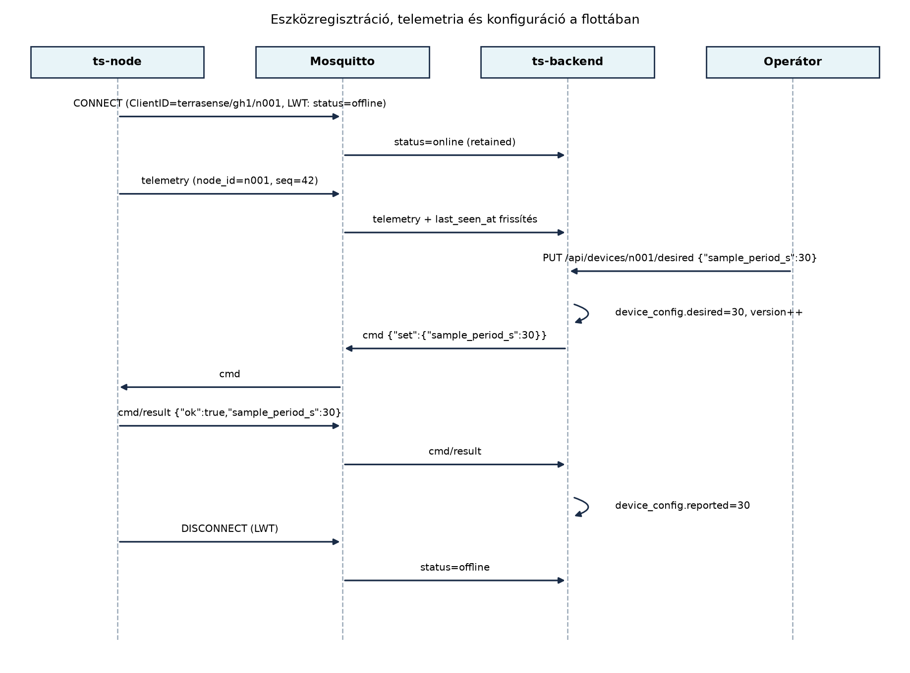

A TerraSense első pilotja három gh1 üvegházban tíz
n001–n010 csomóponttal indult. A sikeres teszt
után a rendszert száz üvegházra bővítik, és ezer eszköz küldi a
telemetriát. Kézzel már nem lehet követni, melyik csomópont milyen
firmware-t futtat, mikor jelentkezett utoljára, miért indult újra, és
kapott-e már új mintavételezési konfigurációt. A flotta méretének
növekedésével a működtetés minősége nem a rádióprotokollon vagy a
brokeren múlik, hanem azon, hogy a backend rendelkezik-e
eszköznyilvántartással, és abból ki tudja-e osztani a
konfigurációt, figyelni tudja-e az állapotot, és le tudja-e vezényelni
az eszköz életciklusának végét.
Definíció. Az eszköznyilvántartás (device registry) a flotta összes eszközének közös, lekérdezhető nyilvántartása. Minden eszközhöz egyértelmű azonosítót, hitelesítési metaadatokat, hardver- és szoftververziót, csoporttagságot, telepítési helyet, valamint az aktuális állapotra és a kiosztott konfigurációra vonatkozó hivatkozásokat rendel.
Definíció. A flotta (fleet) az egy rendszerhez tartozó, közösen menedzselt eszközök összessége. A flottakezelés magában foglalja az eszközök regisztrációját, csoportosítását, konfigurációját, állapotfigyelését, frissítését és kivezetését.
Definíció. Az eszközárnyék (device shadow) itt az Eszközárnyék és digitális iker: kívánt és jelentett állapot alfejezet digitális iker fogalmának flotta-szintű alkalmazása: minden eszközhöz egy kívánt (desired) és egy jelentett (reported) állapotot tárolunk. A kívánt állapotot az üzemeltető vagy a backend logika írja, a jelentett állapotot az eszköz ténylegesen visszajelzi. A kettő eltérése konfiguráció-kézbesítési problémát jelez.
A nyilvántartás és az árnyék kapcsolatát a következő szekvencia mutatja be:

A diagram sorszáma: 1. ábra. A szöveg nélküli olvasó számára: az
eszköz a terrasense/gh1/n001/status retained üzenettel
jelzi az online állapotot, a broker a Last Will üzenetből automatikusan
offline-ra vált. Az operátor egy REST hívással módosítja a kívánt
beállítást, a backend parancsot küld az eszköznek a
terrasense/gh1/n001/cmd topicra, majd az eszköz a
cmd/result topicra válaszol, és a backend frissíti a
jelentett állapotot.
A flotta-adatmodell a TerraSense-ben a ts-backend
PostgreSQL adatbázisában a következő táblákkal valósul meg:
device_groups: csoportok, például
gh1-öntöző, gh1-talaj.devices: egyedi eszköz, a node_id
azonosítóval (site+node összevontan n001 a gh1
alatt, hogy a topicból közvetlenül kereshető legyen).device_config: eszközönként egy sor, a
desired és reported JSONB mezőkkel, valamint
version egész számmal.device_state: az utolsó ismert futásállapot, beleértve
a reset_cause értékét és az utolsó seq
sorszámot.devices.last_seen_at és a
device_state.status mező pedig a jelenlétet tárolja.A nyilvántartás kialakításakor több tervezési döntést kell meghozni; a főbb kompromisszumokat a következő táblázat foglalja össze.
| Kérdés | Lehetséges megoldás | Előny | Hátrány | TerraSense-választás |
|---|---|---|---|---|
| Hol tároljuk az eszközöket? | Külön flottaszolgáltatás (LwM2M) | szabványos, kész funkciók | plusz rendszer, zártabb adatmodell | saját táblák a meglévő backendben, mert a TerraSense-t magunk építjük |
| Csoportosítás módja | statikus csoportok | egyszerű, kiszámítható | nem követi a valós változásokat | címkék + csoportok vegyesen |
| Konfiguráció kiosztása | közvetlen parancs küldés | azonnali | nem tolerálja az eszköz offline állapotát | árnyék: a desired-et tároljuk, a kézbesítés aszinkron és újrapróbálható |
| Jelenlét követése | pollozás (REST) | megbízható | skálázhatatlan, késleltetett | MQTT LWT + retained status |
| Állapot perzisztencia | csak memória | gyors | újrainduláskor elveszik | PostgreSQL + TimescaleDB, az állapotok historizálhatók |
A csoportok és címkék szerepe az, hogy a műveleteket
ne egyesével kelljen elvégezni. A TerraSense-ben minden eszközhöz
legalább egy csoportot rendelünk, például gh1-öntöző,
gh1-talaj. A csoporthoz tartozik egy konfigurációs
sablon, amely az új eszközök alap desired állapotát adja. A
címkék (például kritikus, preview) szabadon
szűrhetővé teszik a flottát, anélkül hogy az adatmodellt mereven át
kellene alakítani.
A konfiguráció-kiosztás árnyékkal elve: a backend
soha nem közvetlenül írja az eszköz memóriáját, hanem a
device_config.desired mezőben rögzíti a kívánt állapotot.
Egy háttérfolyamat figyeli a desired és reported közti különbséget, és
minden változásnál parancsot küld a
terrasense/<site>/<node>/cmd topicra. Az eszköz
a cmd/result topicra küldi a nyugtát, amelyben szerepel a
ténylegesen alkalmazott érték. A backend ekkor frissíti a
reported mezőt. Ha az eszköz offline, a parancs a brokeren
megőrzött üzenetként vagy a backend újrapróbáló logikájával később is
kézbesíthető; a desired mindvégig megmarad.
A jelenlétfigyelés az MQTT Last Will és Testament
(LWT) mechanizmusra épül. A ts-node a
terrasense/<site>/<node>/status retained
topicra online üzenetet küld, és a CONNECT során LWT-t
állít be offline tartalommal. Ha a kapcsolat törpe módban
megszakad, a broker offline retained üzenetet publikál,
amit a backend feliratkozással figyel, és frissíti a
device_state.status mezőt. A telemetria érkezésekor a
devices.last_seen_at is frissül, így a csendes, de élő
kapcsolat is nyomon követhető.
Az alábbi példa a TerraSense flotta nyilvántartásának konkrét
megvalósítását mutatja. Az adatmodell a
~/iot-labor/i061/schema.sql fájlban kerül rögzítésre.
Munkakönyvtár:
mkdir -p ~/iot-labor/i061 && cd ~/iot-labor/i061A PostgreSQL/TimescaleDB táblákat a következő SQL hozza létre:
-- schema.sql: TerraSense flotta-nyilvántartás
CREATE TABLE IF NOT EXISTS device_groups (
group_id TEXT PRIMARY KEY,
name TEXT NOT NULL,
config_template JSONB NOT NULL DEFAULT '{}'::jsonb
);
CREATE TABLE IF NOT EXISTS devices (
node_id TEXT PRIMARY KEY, -- pl. 'gh1/n001'
site TEXT NOT NULL, -- 'gh1'
node TEXT NOT NULL, -- 'n001'
group_id TEXT REFERENCES device_groups(group_id),
fw_version TEXT,
provisioned_at TIMESTAMPTZ NOT NULL DEFAULT now(),
last_seen_at TIMESTAMPTZ
);
CREATE TABLE IF NOT EXISTS device_config (
node_id TEXT PRIMARY KEY REFERENCES devices(node_id),
desired JSONB NOT NULL DEFAULT '{}'::jsonb,
reported JSONB NOT NULL DEFAULT '{}'::jsonb,
version INT NOT NULL DEFAULT 0,
updated_at TIMESTAMPTZ NOT NULL DEFAULT now()
);
CREATE TABLE IF NOT EXISTS device_state (
node_id TEXT PRIMARY KEY REFERENCES devices(node_id),
status TEXT NOT NULL DEFAULT 'unknown', -- online | offline | unknown
reset_cause TEXT,
last_seq BIGINT,
last_uptime_s BIGINT
);A devices tábla node_id értéke a
topicból származó <site>/<node> kulcs, például
gh1/n001. Ez garantálja, hogy a telemetria topicjából
közvetlenül hivatkozhatunk a nyilvántartás rekordjára. A
device_config.desired mezőbe például a következő JSON
kerül, amikor az operátor a mintavételezési időt 60-ról 30 másodpercre
csökkenti:
{"sample_period_s": 30}A backend ekkor a device_config.version értékét növeli,
és egy MQTT parancsot küld a terrasense/gh1/n001/cmd
topicra:
{"set":{"sample_period_s":30}}Az eszköz válasza a terrasense/gh1/n001/cmd/result
topicra:
{"ok":true,"sample_period_s":30}A backend a válasz alapján frissíti a
device_config.reported mezőt. A reported és
desired közti eltérés akkor jelez hibát, ha a parancs nem
kerül nyugtázásra.
A flotta-adatmodell teszteléséhez először töltsük be a sématáblákat a backend adatbázisába:
docker compose -f ~/iot-labor/stack/compose.yaml exec -T db psql -U terrasense \
-d terrasense -f - < ~/iot-labor/i061/schema.sqlEllenőrzési igény: A
compose.yamlszolgáltatás- és adatbázisnevei, valamint a psql felhasználó- és adatbázisneve a korábbi laborokban definiált konvenciótól függ; ellenőrizd, hogy ats-backendadatbázis-konténer neve és a felhasználó pontosan egyezik-e a te környezeteddel.
Regisztráljunk egy teszteszközt:
INSERT INTO device_groups (group_id, name, config_template)
VALUES ('gh1-öntöző', 'Üvegház 1 öntöző kör', '{"sample_period_s":60}');
INSERT INTO devices (node_id, site, node, group_id, fw_version)
VALUES ('gh1/n001', 'gh1', 'n001', 'gh1-öntöző', '1.2.0');
INSERT INTO device_config (node_id, desired, reported, version)
VALUES ('gh1/n001', '{"sample_period_s":60}', '{}', 0);
INSERT INTO device_state (node_id, status, reset_cause, last_seq, last_uptime_s)
VALUES ('gh1/n001', 'offline', 'power_on', NULL, NULL);A lekérdezés az összes eszközre és az eltérésre:
SELECT d.node_id, d.group_id, d.fw_version, st.status, c.desired ->> 'sample_period_s' AS desired_period,
c.reported ->> 'sample_period_s' AS reported_period, c.version
FROM devices d
JOIN device_state st USING (node_id)
JOIN device_config c USING (node_id);Várt kimenet:
node_id | group_id | fw_version | status | desired_period | reported_period | version
-----------+-------------+------------+--------+----------------+-----------------+---------
gh1/n001 | gh1-öntöző | 1.2.0 | offline| 60 | NULL | 0A leggyakoribb hibákat és javításukat az alábbi táblázat foglalja össze.
| Tünet | Lehetséges ok | Javítás |
|---|---|---|
A last_seen_at nem frissül |
A telemetria ingest nem hívja a flotta szolgáltatást | Ellenőrizd az MQTT-feliratkozást a
terrasense/+/+/telemetry topicra |
| Az eszköz forever offline marad | Az LWT retained üzenet elveszett, vagy a backend nem írja a
status mezőt |
Ellenőrizd a retained flaget a publishnál, és a status topic feliratkozást |
A reset_cause NULL |
Az eszköz nem küldi a boot üzenetben a reset okot | A Hibatűrés: watchdog, újraindulás,
hibanaplózás labor boot üzenetét bővítsd ki a
reset_cause mezővel, és a backend parserében kezeld |
A parancs után a reported nem frissül |
Az eszköz nem válaszol a cmd/result topicra |
Ellenőrizd a parancs topicját és a válasz JSON sémáját; a backend timeout után hibát jelezzen |
A jelenlétet a telemetriából becsüljük. Sokan
azt gondolják, hogy ha nincs telemetria, az eszköz leállt. Pedig ha a
mintavételezési idő 10 perc, akkor 9 percig csend van. A megbízható
jelenlét az MQTT LWT + retained status, nem az utolsó üzenet ideje. A
last_seen_at csak kiegészítő diagnosztikai adat.
A kivezetés nem azonos az adatbázis-sor törlésével. Ha egy eszközt leszerelünk, a hitelesítő kulcsát is vissza kell vonni, különben a megtalált eszközből a támadó a hálózathoz férhet. A kivezetés továbbá törölheti az adatokat, de a nyilvántartási rekordot megtarthatjuk audit célra (soft delete), ahelyett hogy fizikailag kitöröljük.
A desired állapot a device_config-ban, nem
az eszközön. Ha a kívánt értéket csak közvetlen MQTT paranccsal
küldjük el, az eszköz offline idején elvész. Az árnyék minta szerint a
desired tárolva van, és a kézbesítés aszinkron,
újrapróbálással.
Mikor érdemes külön flottakezelő szolgáltatást (például egy LwM2M szervert) használni a saját nyilvántartás helyett? Fogalmazd meg a TerraSense esetére vonatkozó döntést.
Tervezz SQL lekérdezést, amely megadja a flotta verzióeloszlását:
hány eszköz fut az egyes fw_version értékeken
csoportonként? Az eredményt csoport és verzió szerint rendezd.
A TerraSense backendben valósíts meg egy
GET /api/devices/{node_id}/state végpontot, amely
visszaadja a devices, device_config és
device_state táblákből az adott eszköz teljes állapotát
egyetlen JSON objektumban.
Egészítsd ki a TerraSense backendet egy kivezetési
végponttal (DELETE /api/devices/{node_id}), amely: -
ellenőrzi, hogy az eszköz már legalább 30 napja offline, - visszavonja
az eszköz tanúsítványát (labor-CA esetén egy CRL bejegyzést
szimuláljon), - törli a telemetriai adatokat a TimescaleDB-ből, - soft
delete-eli a devices rekordot (active=false).
Írd le a lépéseket és a szükséges tranzakciós határokat.
Külön LwM2M szervert akkor érdemes választani, ha a flotta nagy,
heterogén, több gyártó eszközeit is kezelni kell, és a szabványos
eszközmenedzsment (például OTA, szenzorértékek expozíciója) előnyt
jelent. A TerraSense esetében a flotta homogén (ts-node), a
backendünk már rendelkezik MQTT-ingesttel és eszközárnyékkal, ezért a
saját nyilvántartás egyszerűbb és jobban integrálható. Döntés: saját
táblák a ts-backend-ben.
SELECT d.group_id, d.fw_version, count(*) AS darab
FROM devices d
GROUP BY d.group_id, d.fw_version
ORDER BY d.group_id, d.fw_version;Ez csoportonként megadja, hány eszköz futtatja az egyes verziókat. A
devices táblában a fw_version az OTA-frissítés: A/B képek, rollback, delta, fokozatos
kiadás OTA labor logikájával frissül.
A Spring Boot controller DeviceStateController.java:
package hu.terrasense.backend.device;
import org.springframework.web.bind.annotation.*;
import org.springframework.jdbc.core.JdbcTemplate;
import org.springframework.stereotype.Service;
@RestController
@RequestMapping("/api/devices")
public class DeviceStateController {
private final JdbcTemplate jdbc;
public DeviceStateController(JdbcTemplate jdbc) {
this.jdbc = jdbc;
}
@GetMapping("/{nodeId}/state")
public Map<String, Object> getDeviceState(@PathVariable String nodeId) {
String sql = """
SELECT d.node_id, d.site, d.node, d.group_id, d.fw_version,
d.provisioned_at, d.last_seen_at,
c.desired, c.reported, c.version AS config_version,
s.status, s.reset_cause, s.last_seq, s.last_uptime_s
FROM devices d
JOIN device_config c USING (node_id)
JOIN device_state s USING (node_id)
WHERE d.node_id = ?
""";
return jdbc.queryForMap(sql, nodeId);
}
}A JdbcTemplate.queryForMap automatikusan JSON objektummá
alakítja a sor oszlopait. A JSONB mezők a PostgreSQL JDBC
driverben PGobject típusúak; ehhez a Jackson leképezés
konfigurációja szükséges (ellenőrzési igény: a Spring Boot verzióban a
PGobject serializálása beépítetten vagy explicit type
handlerrel lehetséges).
A kivezetési végpont pszeudokódja:
@DeleteMapping("/{nodeId}")
@Transactional
public ResponseEntity<Void> decommission(@PathVariable String nodeId) {
// 1. offline ellenőrzés
LocalDateTime lastSeen = jdbc.queryForObject(
"SELECT last_seen_at FROM devices WHERE node_id = ?", Timestamp.class, nodeId);
if (lastSeen != null && lastSeen.isAfter(LocalDateTime.now().minusDays(30))) {
return ResponseEntity.badRequest().build();
}
// 2. tanúsítvány-visszavonás szimulációja (labor CA)
revokeCertificate(nodeId); // CRL-be való felvétel, labor szinten naplóbejegyzés
// 3. telemetriai adatok törlése
jdbc.update("DELETE FROM telemetry WHERE node_id = ?", nodeId);
// 4. eszköz soft delete
jdbc.update("UPDATE devices SET active = false WHERE node_id = ?", nodeId);
return ResponseEntity.noContent().build();
}A tranzakciót úgy érdemes felépíteni, hogy a tanúsítvány-visszavonás kívül essen a SQL tranzakción, mert külső rendszer (PKI) hívása nem rollbackelhető. A telemetria törlést és a soft delete-t egy tranzakcióban végezzük, hogy ne maradjon félkész állapot.
A Flottakezelés: nyilvántartás, konfiguráció,
állapot alfejezet a TerraSense flottakezelését vezette be.
Létrehoztuk a flotta-adatmodellt a
~/iot-labor/i061/schema.sql fájlban:
device_groups (csoportok és konfigurációs sablonok),
devices (identitás, verzió, csoport, jelenléti idő),
device_config (desired/reported JSONB árnyék és
verziószám), device_state (status, reset ok, utolsó
szekvencia és uptime). A konfiguráció-kiosztásnál az árnyék mintát
alkalmaztuk: a desired-et tároljuk, parancsot küldünk a
terrasense/<site>/<node>/cmd topicra, és a
cmd/result üzenetből frissítjük a reported mezőt. A
jelenlétfigyelés az MQTT LWT + retained status üzenetekre
épül. A kivezetés során a hitelesítő kulcs visszavonása kötelező, a
telemetriát töröljük, a rekordot soft delete-tel őrizzük meg. Ezt az
adatmodellt használja az Megfigyelhetőség végponttól
végpontig: metrikák, naplók, nyomkövetés és a Záróprojekt: a teljes TerraSense rendszer összeállítása
és átvétele alfejezet.
JSONB mezők
JdbcTemplate-ből való kiolvasásának pontos
Jackson-konfigurációját ellenőrizni kell; előfordulhat, hogy egy
explicit TypeHandler vagy JsonNode leképzés
szükséges.compose.yaml szolgáltatás- és
adatbázisnevei a korábbi laboroktól függnek; a parancsban feltüntetett
terrasense adatbázis- és felhasználónév egyezőségét a helyi
környezetben kell validálni.